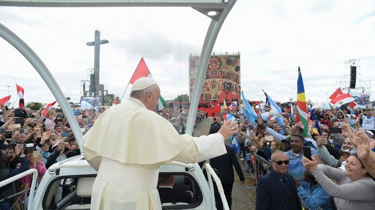
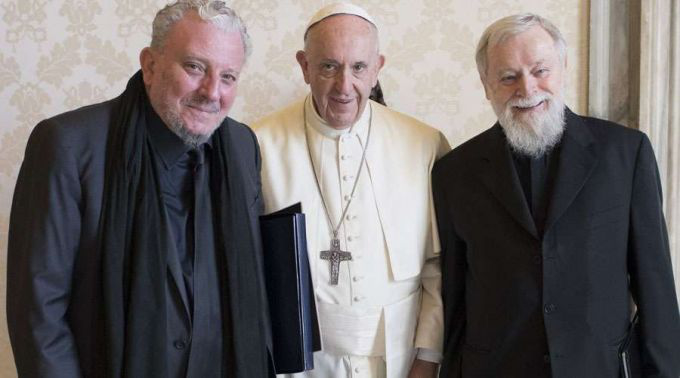

NOTAS OFICIAIS

Papa aos neocatecumenais: em seu DNA a vocação da missão
“Somente uma Igreja desvinculada do poder e do dinheiro, livre de triunfalismos e clericalismos testemunha de forma crível que Cristo liberta o ser humano", disse Francisco.

Celebração 50 anos
Em 5 de maio, o Papa Francisco preside a Celebração em Ação de Graças pelos 50 anos do início do Caminho na diocese de Roma

25 comunidades enviadas
Receberam destino as 25 comunidades que serão enviadas em missão pelo Papa no próximo 5 de maio em Tor Vergata.

História
O Caminho Neocatecumenal começou nas favelas de Palomeras Altas, periferia de Madri, em 1964. Redescobrimento do Batismo.